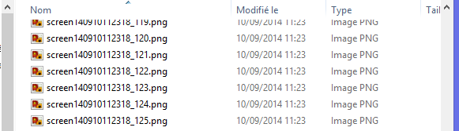

Creating a movie file of a simulation can be done in different ways. One can capture the video using an external program or directly from the simulation program itself. The latter is really practical but requires some effort to implement this feature. Unfortunately, Bullet does not provide a solution to do it.
The approach chosen here consists in 3 steps:
The PNG format is preferred over other formats such as JPEG, GIF, BMP due to its losless compression, which means the image quality is preserved through the size compression.
To save the PNG files, the official libpng is chosen for this task. It is the most natural solution. Libpng depends on zlib, a compression library. The version used in this chapter is 1.6.13, with zlib 1.2.8.
Libpng needs to be compiled, the source can be found on its sourceforge page. The dependent zlib binaries can be downloaded on its official website.
Once these are done, to compile libpng with CMake, you need to:
set(ZLIB_ROOT zlib)Here are the configuration needed to use the libpng in the C++ project:
include:
<libpng source folder>/
<libpng build folder>/ (pnglibconf.h is generated here)
lib directory:
<libpng build folder>/
lib name
png
And do not forget to copy the libpng16.dll file to the project if you are on Windows.
The movie encoding task is accomplished by the tool FFmpeg as a command line executable. In our implementation, we will call FFmpeg as an external program, not as a library. It can be downloaded through its official website under the Get the packages section.
The Windows version, which is served by http://ffmpeg.zeranoe.com/builds/, is built and released daily (and does not seem to indicate a version number like 2.x.x). Once the package is extracted, the executable we will use is ffmpeg.exe and is under the bin/ folder.
The first step is to read the pixels of the OpenGL frame. This is done with the function glReadPixels(). Its prototype is:
void glReadPixels(GLint x, GLint y, GLsizei width, GLsizei height,
GLenum format, GLenum type, GLvoid * data);
It needs an array as a buffer to store all the pixels. For example, we store it as an array of unsigned byte (GLubyte), in the RGB format. The entire frame is needed, hence the parameters (0, 0, width, height).
// get screen pixels into buffer
GLubyte* buffer = new GLubyte[width * height * 3]; // 3 for R, G and B
glReadPixels(0, 0, width, height, GL_RGB, GL_UNSIGNED_BYTE, buffer);
Then, we store it by using the libpng API. The simplified API, which is released with the 1.6.0 version, is used here. As its name suggests, the simplified API simplifies considerably the PNG read/write workflow compared to the legacy API. It relies mostly on the single structure png_image. According to the libpng manual:
To write a PNG file using the simplified API:
1) Declare a ‘png_image’ structure on the stack and memset()
it to all zero.2) Initialize the members of the structure that describe the
image, setting the ‘format’ member to the format of the
image in memory.3) Call the appropriate png_image_write… function with a
pointer to the image to write the PNG data.
The steps 1 and 2 can be implemented as follows:
// write to png file
png_image image;
memset(&image, 0, sizeof image);
image.version = PNG_IMAGE_VERSION;
image.format = PNG_FORMAT_RGB;
image.width = width;
image.height = height;
For the third step, png_image_write_to_file() is the function we need, and its prototype is shown below.
int png_image_write_to_file (png_imagep image,
const char *file, int convert_to_8bit, const void *buffer,
png_int_32 row_stride, const void *colormap);
We do not use the two last parameters (row_stride and colormap), thus we set them to 0.
char filename[50];
sprintf(filename, “screen%s_%d.png”, m_timeStr, m_frameNb);
m_frameNb++;
png_image_write_to_file(&image, filename, 0, buffer, 0, 0);
delete buffer;Calling all these functions each iteration of a simulation results as a series of images created in the disk space, as illustrated below.

To reconstruct a movie from these files, it is important to assign numbers sequentially to them, hence the inclusion of a counter m_frameNb into the file name. Though it is optional, a timestep m_timeStr is used to prevent unwanted behaviour if images of previous movie recordings remain.
Note: The images are flipped vertically due to the different way the pixels are stored between png and OpenGL. This will be fixed in the next step.
To generate the movie file using FFmpeg, we call this external program as if it was run with a terminal, in command line. The function system() enables us to do this.
As a simple example of FFmpeg usage, if the following is input into a terminal:
ffmpeg -f image2 -i ‘screen_%d.png’ video.avi…then ffmpeg is run and, from a sequence of images named sequentially screen_X.png (with X a number), will create an AVI video file named video.avi.
However, the command we will issue is more complex because we need some adjustments. It looks like this:
ffmpeg -f image2 -r 1/0.015 -i screen<timeStr>_%d.png -vf vflip -y -r 25 movie<timeStr>.avi
Here are the meaning of each argument:
-f image2:
Must be used when converting images files into video
-r 1/0.015:
Input framerate: if it is positionned before -i, this indicates the input framerate. 0.015 means that between each image file, there is a delay of 0.015 seconds.
-i screen<timeStr>_%d.png:
Input file name’s pattern: %d means a number, like in the C function printf().
-vf vflip:
Flip vertically (because the image files were already flipped vertically, we need this to revert them back)
-y:
Overwrite if the output file exists
-r 25:
Output framerate: this one is after -i, therefore it corresponds to the output framerate. It adjusts the output rate to 25 fps by duplicating or dropping input frames
movie<timeStr>.avi:
Output file name
The following code executes the previous command, then cleans up the image files. Please note that sprintf() is used only to inject the timestamp m_timeStr into the command.
void Program::generateMovie() {
char command[200];
sprintf(command,
“ffmpeg -f image2 -r 1/0.015 -i screen%s_%%d.png -vf vflip -y -r 25 movie%s.avi”,
m_timeStr, m_timeStr);
cout << “Runnning: ” << command << endl;
system(command);
cout << “Removing temporary images” << endl;
for (int i=0; i<m_frameNb; i++) {
string str = string(“screen”) + m_timeStr + “_” + to_string(i) + “.png”;
remove(str.c_str());
}
}After this, the video file should be created.